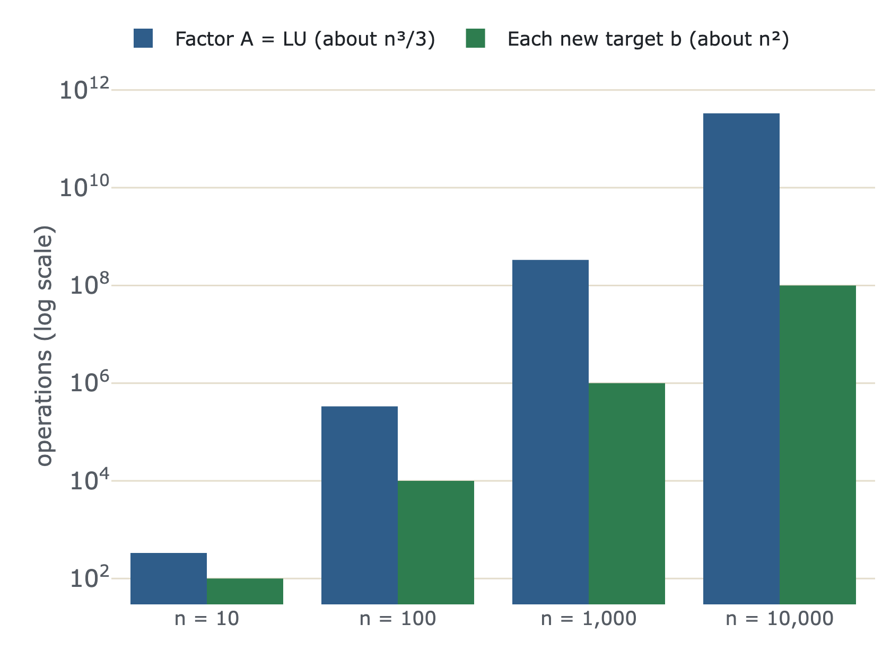

Record elimination once, then solve for any new target in two quick passes.
Shown on a real money question: the same funds, many clients.
Nifty, bond and midcap funds; rules for budget, return and market exposure. The matrix $A$ never changes:
$$ A = \begin{bmatrix} 1 & 1 & 1 \\ 12 & 7 & 15 \\ 1 & 0 & 1.2 \end{bmatrix} $$But each client brings a different target $b$: ₹10 lakh at 11.1%, ₹10 lakh at 9.8%, ₹15 lakh...
Don't redo elimination for every client. Save it as $A = LU$.
Check: $AB\,B^{-1}A^{-1} = A\,I\,A^{-1} = I$.
Socks on, then shoes. To undo: shoes off first, then socks.
Elimination applied $E_{21}$, $E_{31}$, $E_{32}$. To undo it: $E_{32}^{-1}$ first, $E_{21}^{-1}$ last.
Move $E$ to the other side (its inverse adds back 12 × row 1):
$$ \underbrace{\begin{bmatrix} 1 & 1 \\ 12 & 7 \end{bmatrix}}_{A} = \underbrace{\begin{bmatrix} 1 & 0 \\ 12 & 1 \end{bmatrix}}_{L}\underbrace{\begin{bmatrix} 1 & 1 \\ 0 & -5 \end{bmatrix}}_{U} $$Lower triangular with the multiplier; Upper triangular with the pivots.
No row exchanges ⇒ the multipliers $\ell_{21} = 12$, $\ell_{31} = 1$, $\ell_{32} = 0.2$ sit directly in $L$. No extra work.
Going forward, steps interfere: removing 0.2 × the new row 2 quietly adds back $0.2 \times 12 = 2.4$ of row 1, so $-1 + 2.4 = 1.4$.
Going backward with $L$, nothing interferes. That's why software stores $L$ and $U$.
Forward: $Lc = b$, top down. Back: $Ux = c$, bottom up.
Client: $b = (10, 98, 5.2)$
₹4 lakh Nifty, ₹5 lakh bonds, ₹1 lakh midcap. No new elimination needed.

Factoring: about $\tfrac13 n^3$ operations. Each new target: about $n^2$. For 1,000 assets: 333 million once, then 1 million per client.
Pull the pivots out of $U$ into a diagonal matrix $D$:
$$ U = \begin{bmatrix} 1 & 0 & 0 \\ 0 & -5 & 0 \\ 0 & 0 & -0.4 \end{bmatrix}\begin{bmatrix} 1 & 1 & 1 \\ 0 & 1 & -0.6 \\ 0 & 0 & 1 \end{bmatrix} $$Now both triangular factors have 1s on the diagonal, and the pivots sit in the middle.
A credit fund (12%, like Nifty) puts a 0 in a pivot position. Swap rows first, then factor:
$$ P_{23}A = \begin{bmatrix} 1 & 0 & 0 \\ 1 & 1 & 0 \\ 12 & 0 & 1 \end{bmatrix}\begin{bmatrix} 1 & 1 & 1 \\ 0 & -1 & 0.2 \\ 0 & 0 & 3 \end{bmatrix} $$$n!$ of them (6 for 3 × 3). Closed under multiplication. $P^{-1} = P^T$.
The balanced fund (half Nifty, half bonds) factors with the same $L$:
$$ U = \begin{bmatrix} 1 & 1 & 1 \\ 0 & -5 & -2.5 \\ 0 & 0 & \mathbf{0} \end{bmatrix} $$The trouble shows up on $U$'s diagonal: a 0 pivot, so back substitution fails.
All pivots on $U$'s diagonal non-zero ⇔ invertible.
A lab that factors your own matrix into $L$ and $U$ and solves for any target, plus worked hedging and options examples:
learn.krisarj.com
Based on MIT OpenCourseWare 18.06 Linear Algebra (Prof. Gilbert Strang), used under CC BY-NC-SA 4.0; these slides are shared under the same licence. Not affiliated with or endorsed by MIT. Educational only, not investment advice.